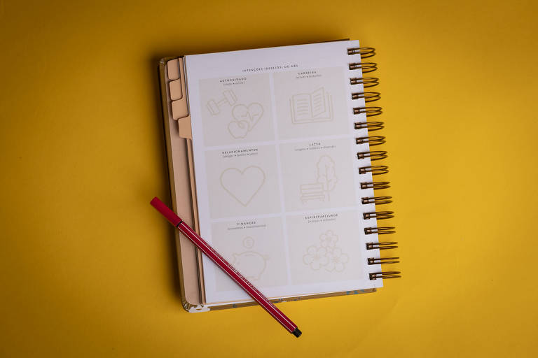
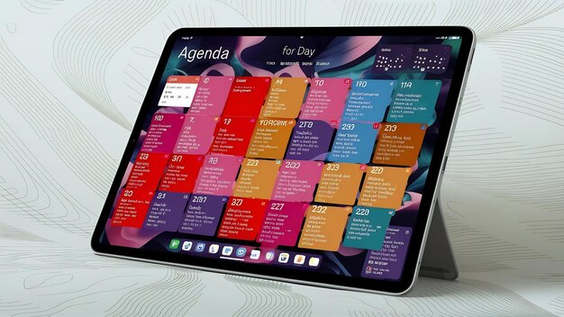
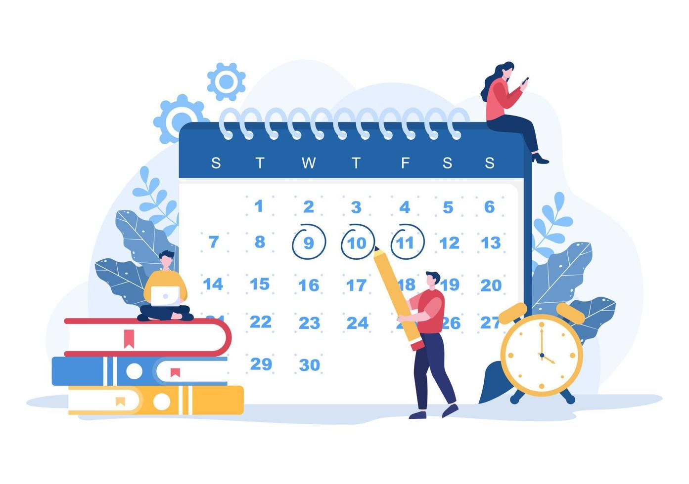
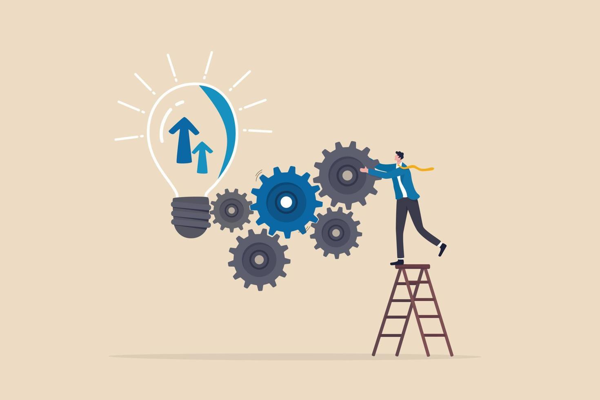
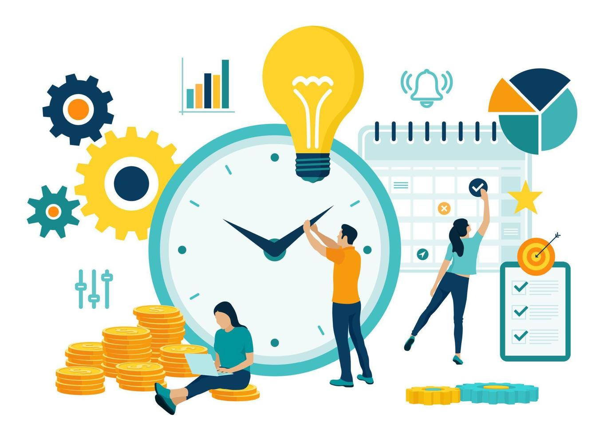
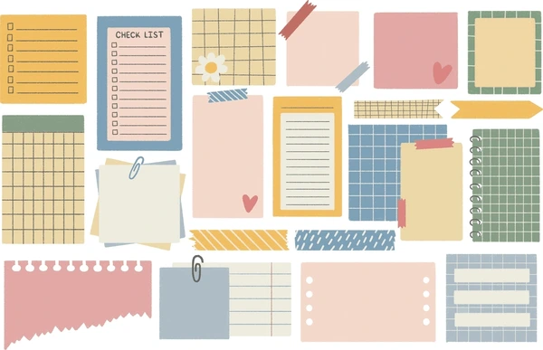

O que é uma Agenda?
A agenda de papel é a versão mais tradicional e tangível. As pessoas que preferem escrever à mão e personalizar suas anotações adoram esse formato. Uma agenda de papel pode ser encontrada em várias opções, como diárias, semanais ou mensais, dependendo da necessidade de planejamento de cada um. Além disso, ela permite uma personalização rica com canetas coloridas, adesivos e marcadores, tornando o processo de organização mais criativo e prazeroso.
Tipos de Agenda

A agenda de papel é a versão mais tradicional e tangível. As pessoas que preferem escrever à mão e personalizar suas anotações adoram esse formato. Uma agenda de papel pode ser encontrada em várias opções, como diárias, semanais ou mensais, dependendo da necessidade de planejamento de cada um. Além disso, ela permite uma personalização rica com canetas coloridas, adesivos e marcadores, tornando o processo de organização mais criativo e prazeroso.

A agenda digital é uma ferramenta moderna e acessível, disponível em dispositivos como smartphones, tablets e computadores. Uma das suas principais vantagens é a sincronização em tempo real, o que facilita atualizações e lembretes automáticos. Exemplos populares incluem Google Calendar, Outlook, Trello e vários aplicativos de produtividade que podem ser integrados a outras ferramentas, aumentando a eficiência na gestão de tempo.
Funções da Agenda

Uma das funções mais importantes de uma agenda é ajudar no planejamento de tarefas. Isso inclui a organização de compromissos diários, semanais e mensais, a definição de prazos e metas, e a priorização de atividades. Com uma visão clara das responsabilidades, fica mais fácil gerenciar o tempo e garantir que todas as tarefas sejam concluídas de maneira eficiente.

Outra função crucial é o registro de eventos importantes, como reuniões, aniversários, datas comemorativas e compromissos médicos. A agenda ajuda a manter esses eventos organizados e evita esquecimentos, proporcionando lembretes oportunos. Além disso, ter um registro histórico desses eventos pode ser útil para consultas futuras.
Benefícios do Uso de Agenda

O uso regular de uma agenda pode resultar em uma melhoria significativa da produtividade. Ao visualizar e organizar tarefas de forma clara, é possível aumentar a eficiência e reduzir o tempo perdido com procrastinação. A agenda atua como uma ferramenta de foco, ajudando a cumprir prazos e alcançar metas de maneira organizada.

Uma agenda eficiente permite uma melhor gestão do tempo, ajudando a controlar compromissos e prazos. Com a agenda, é mais fácil identificar períodos livres e planejar novos projetos. Isso proporciona um equilíbrio entre vida profissional e pessoal, minimizando o estresse e aumentando a sensação de controle.
Personalização da Agenda

Uma das grandes vantagens das agendas de papel é a possibilidade de personalização. Usuários podem utilizar canetas coloridas, adesivos e marcadores para destacar informações importantes e adicionar um toque pessoal às anotações. Além disso, as capas e páginas internas podem ser customizadas conforme o gosto de cada pessoa, tornando a experiência de uso mais agradável e única.

As agendas digitais também oferecem várias opções de personalização, como temas e layouts personalizáveis. Muitos aplicativos permitem a integração com outras ferramentas e apps, ampliando suas funcionalidades. Essa customização facilita a adaptação da agenda às necessidades individuais, tornando o planejamento mais eficiente e prático.
O que é uma agenda?
Tipos de Agenda
• Papel
• Digital
Funções da Agenda
• Planejamento de Tarefas
• Registro de Eventos
Benefícios do Uso de Agenda
• Melhoria da Produtividade
• Gestão de Tempo
Personalização da Agenda
• Agenda de Papel
• Agenda Digital